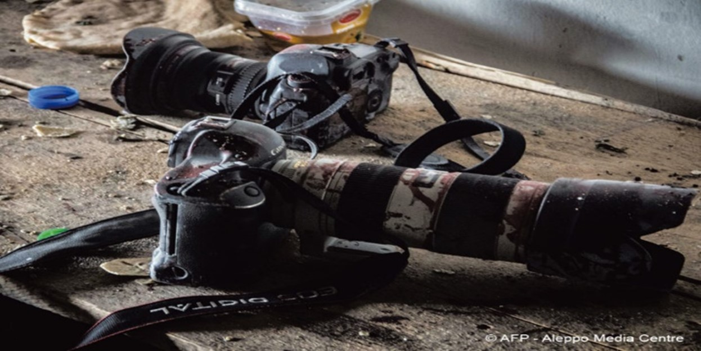
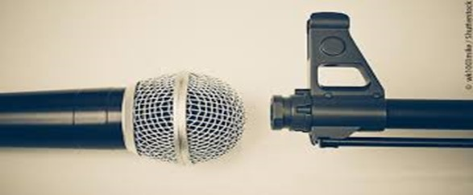

Journalisme ou risques à prendre
Source de l'image: journals.openedition.org
Tout comme les militaires qui mènent la guerre, les journalistes qui la rapportent le font au péril de leur propre sécurité et risquent même leur vie..
Il est vrai qu’avec l’évolution et la révolution technologique, le métier de journalisme et des médias a conduit à des dérives qui pèsent sur le respect des principes de l’information médiatique. La problématique des rapports entre journalisme et risque s’appréhende à travers l’ensemble des effets néfastes produits par les aléas de la guerre.
Notre article examine les risques du journalisme en temps de conflit. Il s’agit d’explorer la diversité des risques encourus par les journalistes durant la guerre au Proche-Orient
Depuis plusieurs années déjà, le journalisme est considéré comme une « profession à risque ». En effet, en période de conflit, la présence des journalistes est cruciale pour rendre compte de l'évolution de la situation, du nombre de victimes, des dommages civils et militaires, ainsi que des implications politiques, économiques et sociales de la guerre.
Source de l'image: France-fraternités
La guerre constitue un moment clé pour la production d'informations médiatiques. Dans les sociétés modernes, il existe une forte demande d'informations de la part du public et des institutions politiques dès qu'un conflit éclate. Dans ces moments de tension, les journalistes agissent en tant que médiateurs.
Il est important de souligner qu'en période de conflit, l'information censée réduire l'incertitude peut souvent engendrer un malaise social. Les belligérants cherchent à utiliser l'information comme un outil de censure et de propagande pour soutenir leurs objectifs de guerre. Les événements au Proche-Orient ont une fois de plus mis en évidence la volonté des parties en conflit d'instrumentaliser les médias en situation de crise. De plus, l'exercice du journalisme en temps de guerre est souvent conditionné par les stratégies politiques et militaires en place. Pour l'armée, contrôler la couverture journalistique est crucial pour influencer la perception de la guerre. Les journalistes qui acceptent de se conformer aux règles établies bénéficient souvent de la protection militaire, tandis que les journalistes indépendants courent les plus grands risques en zone de conflit.
De plus, tout conflit armé expose les journalistes à divers risques. En raison de l'insécurité, ils peuvent être pris pour cibles par des tirs ennemis dirigés contre les forces ou groupes qu'ils accompagnent, être menacés par des explosions dans des champs de mines, ou simplement être victimes d'accidents. Cependant, les risques associés aux situations dangereuses propres aux conflits ne sont pas les seuls à menacer la profession journalistique. De simples victimes du hasard dans le passé, les journalistes sont devenus progressivement des cibles délibérées d'attaques de la part de groupes armés et d'États.
En résumé, la présence des journalistes sur le front comporte un certain nombre de risques, dont celui de mourir. Cependant, ils ne doivent pas être exposés au danger, ni servir de cibles pour un quelconque intérêt politique ou financier.
Par ailleurs, la mise en place des mesures de formation et de protection au profit des journalistes dans les zones de conflit constitue une réponse professionnelle et institutionnelle dans un effort relativement cohérent en vue de prévenir et de gérer le risque. Toute intervention destinée à atténuer ou à éliminer le danger touche aussi bien à la sécurité physique qu’aux aspects psychologiques.
Source de l'image: Le courrier de l’UNESCO
4e B : Bryan Abboud, Antonio Abi Nader, Karl Ghorayeb